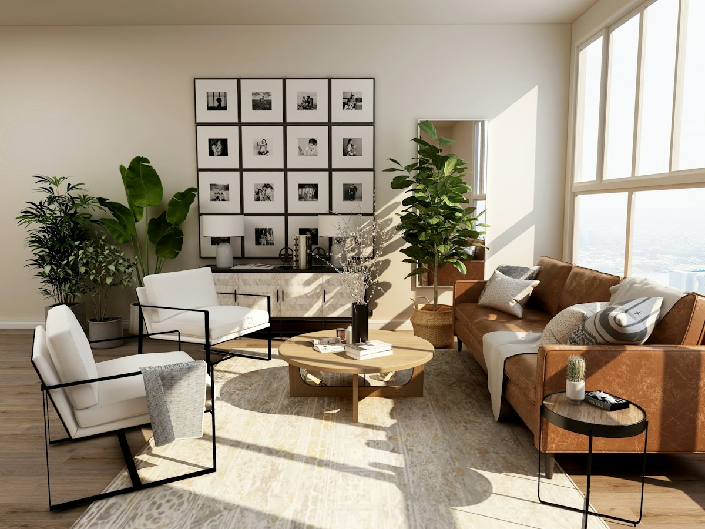
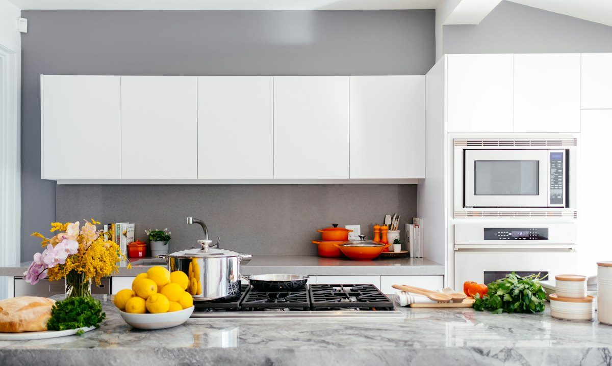

Kontorsstäd
Regelbunden städning av kontor, personalutrymmen och mötesrum.
Kontorsstäd, trappstäd, fönsterputs och flyttstäd – regelbundet eller vid enstaka tillfällen.
Lokalvård
En ren arbetsplats eller ett välstädat trapphus gör skillnad varje dag. Vi städar noggrant och följer en tydlig checklista så att resultatet blir jämnt från gång till gång.
Lokalvård kan kombineras med fastighetsskötsel och byggservice – perfekt för föreningar och företag som vill ha en partner för allt.
Det här hjälper vi till med
Regelbunden städning av kontor, personalutrymmen och mötesrum.
Städning av trapphus, entréer och gemensamma utrymmen.
Fönsterputs för hem, kontor och butiker – invändigt och utvändigt.
Grundlig flyttstädning enligt checklista inför överlämning.
Städning efter renovering och byggnation – grov- och finstäd.
Återkommande eller enstaka storstädningar av hem och lokaler.

Kvalitet
Vi arbetar efter checklistor och gör uppföljningar så att städningen håller jämn kvalitet. Har något missats åtgärdar vi det.


Som privatperson kan du göra RUT-avdrag på arbetskostnaden för hushållsnära tjänster som hemstädning, flyttstäd och fönsterputs. Vi drar av beloppet direkt på fakturan och sköter ansökan hos Skatteverket.
Så arbetar vi
Ring, sms:a eller fyll i formuläret. Berätta kort vad du behöver hjälp med.
Vi tittar på jobbet på plats och lämnar en tydlig offert utan dolda kostnader.
Vi utför arbetet enligt plan, håller dig uppdaterad och lämnar en städad arbetsplats.
Gemensam genomgång när allt är klart – och vi finns kvar om något behöver justeras.
Ja, vi tar med det material och de maskiner som behövs för uppdraget.
Ja, vi lägger upp ett schema som passar er – varje vecka, varannan vecka eller en gång i månaden.
Vi städar enligt checklista och åtgärdar eventuella anmärkningar vid besiktningen.
Som privatperson kan du göra RUT-avdrag på arbetskostnaden för exempelvis hemstädning, flyttstäd och fönsterputs i hemmet.
Ring oss eller begär en kostnadsfri offert – vi återkommer så snart vi kan.